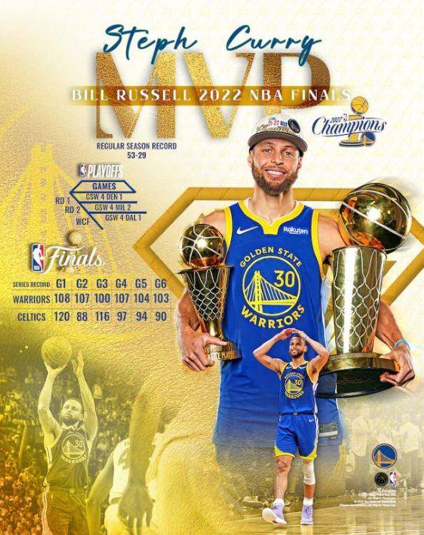

Team
金州勇士隊成立於1946年
當時名為費城勇士（Philadelphia Warriors）
是BAA（籃球協會，NBA的前身）創始成員之一
球隊在1962年搬遷到舊金山
改名為舊金山勇士（San Francisco Warriors）
並在1971年改為現名金州勇士（Golden State Warriors）

Career
早期挑戰 2009-2014
庫里職業生涯的前幾年受到傷病困擾，尤其是腳踝問題。但他逐漸展現出他作為頂尖射手的潛力
並與克雷·湯普森（Klay Thompson）組成了著名的「浪花兄弟」（Splash Brothers）組合。
崛起和冠軍榮耀 2014-2019
2014-2015賽季：庫里帶領勇士隊以67勝15負的戰績完成常規賽，並在季後賽中一路過關斬將
最終奪得總冠軍。他本人獲得了常規賽MVP。
2015-2016賽季：勇士隊創下了73勝9負的歷史最佳常規賽戰績，庫里第二次獲得常規賽MVP
且是歷史上第一位全票通過的MVP。然而，勇士在總決賽中被克里夫蘭騎士隊逆轉。
2016-2017賽季：杜蘭特加盟後，勇士隊變得更強大，最終在總決賽中擊敗騎士隊
庫里獲得了第二個總冠軍。
2017-2018賽季：勇士隊再次在總決賽中擊敗騎士，庫里贏得了第三個總冠軍。
2018-2019賽季：勇士隊連續第五年打進總決賽，但最終輸給了多倫多猛龍隊。
後期生涯 2019-至今
2019-2020賽季：庫里因手部受傷缺席了大部分賽季，勇士隊戰績低迷。
2020-2021賽季：庫里恢復健康，並且表現出色，獲得了得分王，但勇士隊未能打進季後賽。
2021-2022賽季：庫里繼續保持高水平的表現，帶領勇士隊再次進入總決賽，並擊敗波士頓凱爾特人
奪得第四個總冠軍，庫里首次獲得總決賽MVP。

生涯數據
| 常規賽數據 | |
|---|---|
| 場次 | 逾900場 |
| 場均得分 | 24.6分 |
| 場均籃板 | 4.7個 |
| 場均助攻 | 6.5次 |
| 場均搶斷 | 1.7次 |
| 投籃命中率 | 47.5% |
| 三分球命中率 | 42.8% |
| 罰球命中率 | 90.8% |
| 季後賽數據 | |
|---|---|
| 場次 | 逾130場 |
| 場均得分 | 26.6分 |
| 場均籃板 | 5.4個 |
| 場均助攻 | 6.2次 |
| 場均搶斷 | 1.6次 |
| 投籃命中率 | 45.2% |
| 三分球命中率 | 40.1% |
| 罰球命中率 | 89.3% |